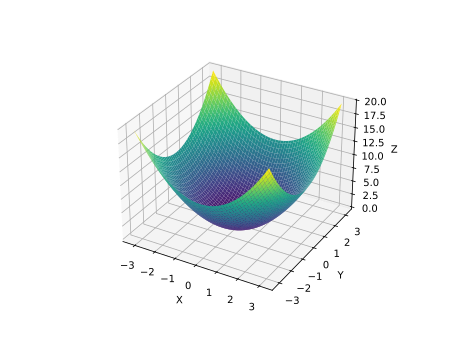

An Algebraic View of Convex Optimization
Kevin Shu
California Institute of Technology

Ben Grimmer - Johns Hopkins University

Alex L. Wang - Purdue University
Outline
- Introduction and History of First Order Methods
- Minimax Optimal Algorithms for Convex Minimization
- Beyond Minimax Optimality: Subgame Perfection
- Performance Estimation and Algebraically Deriving Algorithms
- Reducing Memory with Longstep Gradient Descent
Introduction and History
We want to minimize smooth convex functions $f$.
- Convex - $f(t x + (1-t) y) \le t f(x) + (1-t)f(y)$ whenever $t \in [0,1]$.
- Smooth - $\|\nabla f(x) - \nabla f(y)\| \le L \|x-y\|.$
Introduction and History
History
- Standard: Gradient descent with step size $\frac{1}{L}$ yields \[f(x_n) - f(x_*) \le \frac{L}{2n} \|x_0 - x_*\|^2.\]
- Fast Gradient Method (Nesterov 1983): There is a gradient method (using momentum) so that \[f(x_n) - f(x_*) \le \frac{2L}{(n+1)^2} \|x_0 - x_*\|^2.\]
- Performance estimation (Drori and Teboulle 2014): If each step size is $\frac{h}{L}$ with $0 < h \le 1$ in gradient descent, \[f(x_n) - f(x_*) \le \frac{L}{4 n h + 2} \|x_0 - x_*\|^2.\]
- Optimized Gradient Method (Kim and Fessler 2016): Gives an explicit gradient method that achieves the minimax optimal convergence rate (even up to constants).
Introduction and History
Given an oracle for evaluating and differentiating $f$, we want to find an approximate minimum of $f$.
History
- Performance estimation (Drori and Teboulle 2014): If each $h_i = h$ with $0 < h \le 1$ in gradient descent, \[f(x_n) - f(x_*) \le \frac{L}{4 n h + 2} \|x_0 - x_*\|^2.\]
- Optimized Gradient Method (Kim and Fessler 2016): Gives an explicit gradient method that achieves the minimax optimal convergence rate (even up to constants).
The last two bounds use the Performance Estimation Problem (PEP) framework. We will look at OGM first.
Optimized Gradient Method (OGM)
Theorem (Kim and Fessler 2016)
If OGM is run for $N$ iterations it produces iterates $x_0, \dots, x_N$ satisfying \[ f(x_N) - f(x_*) \le \frac{L}{2\tau_N} \|x_0-x_*\|^2, \] where $\tau_N \ge \frac{1}{2}(N+1)(N+1+\sqrt{2})$.
Optimized Gradient Method (OGM)
Theorem (Drori 2017)
There exists a function $f_{hard} :\R^{N+2} \rightarrow \R$ and $x_0 \in \R^{N+2}$ so that any iterative algorithm with the property that \[ x_{i+1} \in x_0 + \text{span}(\nabla f_{hard}(x_0), \dots, \nabla f_{hard}(x_i)), \] \[ f(x_N) - f_* \ge \frac{L}{2\tau_N} \|x_0 -x_*\|^2, \] where $\tau_N$ is defined by the OGM recurrence.
Optimized Gradient Method (OGM)
Together, we have an algorithm producing a guarantee \[ f(x_N) - f(x_*) \le \frac{L}{2\tau_N} \|x_0-x_*\|^2, \] for any function $f$ and a hard function showing that it is not possible to improve this bound for arbitrary functions.
THE END?
Beyond Minimiax Optimality
Difficiencies of Minimax Optimality
Difficiencies of Minimax Optimality
The function $f(x)=\frac{1}{2}x^2$ is worst case for OGM, i.e. for this $f$, \[ f(x_N) - f(x_*) = \frac{L}{2\tau_N} \|x_0-x_*\|^2 = \Omega\left(\frac{1}{N^2}\right). \]
There are many functions which are not adversarially chosen, but where OGM still has worst case performance. In this case, it turns out that after 2 steps, the gradient information obtained by OGM already determines the location of the minimum.
How can we obtain convergence guarantees beyond the worst case setting?
The Minimization Game
Consider a 2 player zero sum extensive form game:
Alice takes the role of the optimizer.
Bob takes the role of the function.
In round $i=0,\dots,N$:
- Alice chooses $x_i \in \R^d$.
- Bob chooses values for $f(x_i)$ and $\nabla f(x_i)$.
Bob declares an $L$-smooth convex function $f : \R^d \rightarrow \R$ agreeing with the specified information and with a minimizer at $x_*$.
Alice gets a payout of $\frac{L}{2} \frac{\|x_0-x_*\|^2}{f(x_N) - f(x_*)}$.
The Minimization Game
There is a pure Nash equillibrium for this game:
Alice chooses query points according to the OGM algorithm.
Bob responds with the values and gradients of the Drori Hard function.
Neither player can improve their score by deviating.
The Minimization Game
Nonadversarial function = Suboptimal play


Want a notion of optimality that dynamically adjusts to either case.
The Minimization Game
Subgame Perfect Equillibrium
A subgame for the minimization game is described by some history of gradients $\{(x_i, f(x_i), \nabla f(x_i)\}_{i=1}^n\}$ (if it's Alice's turn).
A pair of strategies is in subgame perfect equillibrium if for every subgame, the strategies restricted to starting from that subgame is still in Nash equillibrium.
The example of $f(x) = \frac{1}{2}x^2$ shows that OGM is not part of a subgame perfect equillibrium; a better first order method could find an optimum faster after seeing some gradients from $f$.
A Subgame Perfect Gradient Method
Subgame Perfect Gradient Method (SPGM)
We found a first order method with the following dynamic guarantee:
Theorem (Grimmer, S, Wang)
The algorithm (SPGM) provides the following guarantee: if $\mathcal{H} = \{(x_i, f_i, g_i)\}_{i=0}^n$ were the first order information produced by $n$ iterations of SPGM, then there exists some $\hat{\tau}_N$ (depending on $\mathcal{H}$) so that for any function $f$ so that $f(x_i) = f_i$ and $\nabla f(x_i) = g_i$, \[ f(x_N) - f(x_*) \le \frac{L}{2\hat{\tau}_N} \|x_0-x_*\|^2. \]
A Subgame Perfect Gradient Method
Subgame Perfect Gradient Method (SPGM)
We found a first order method with the following dynamic guarantee:
Theorem (Cont)
On the other hand, there exists a function $f_{\mathcal{H}}$ agreeing with the history $\mathcal{H}$ and so that any sequence $x_{n+1}, \dots, x_{N}$ satisfying \[ x_i \in x_0 + \text{span} \{\nabla f(x_0), \dots, \nabla f(x_{i-1})\}, \] \[ f_{\mathcal{H}}(x_N) - f_{\mathcal{H}}(x_*) \ge \frac{L}{2\hat{\tau}_N} \|x_0-x_*\|^2. \]
A Subgame Perfect Gradient Method
Subgame Perfect Gradient Method (SPGM)
In other words, SPGM is able to optimally adapt its update rules and guarantees depending on the gradient information obtained on each iteration
Moreover, this method can be derived naturally using the performance estimation methodology.
The remainder of the talk is devoted to deriving this method.
Performance Estimation
Performance Estimation
Basic idea of performance estimation: any first order method can only see the function and its gradients at a finite number of points.
Performance Estimation
Basic idea of performance estimation: any first order method can only see the function and its gradients at a finite number of points.

Performance Estimation
Basic idea of performance estimation (Drori and Teboulle 2012): any first order method can only see the function and its gradients at a finite number of points.
Definition
Given a set of triples $\mathcal{T} = \{(x_i, f_i, g_i)\}_{i=0}^n \subseteq \R^d \times \R \times \R^d$, we say that $\mathcal{T}$ is interpolable if there exists an $L$-smooth convex function $f$ so that $f(x_i) = f_i$ and $\nabla f(x_i) = g_i$ for each $i$.
Performance Estimation
Theorem (Taylor, Hendrickx, Glineur 2016)
$\mathcal{T}$ is interpolable if and only if for each $i, j \in \{0, \dots, n\}$, \[ Q_{ij} = f_i - f_j - \langle g_j, x_i - x_j \rangle - \frac{1}{2L}\|g_i-g_j\|^2 \ge 0. \]
It turns out that this implies that the problem of determining the convergence rate for a fixed number of steps of many algorithms reduces to an SDP.
Performance Estimation
An iterative algorithm defines a sequence of query points $x_0, x_1, \dots, x_N$, where $x_i$ depends on the values of the function and its gradients at $x_0, \dots, x_{i-1}$.
Want a bound \[ f(x_N) - f(x_*) \le \frac{L}{2\tau} \|x_0-x_*\|^2, \] where $x_*$ is a minimizer and $\tau$ is as large as possible.
Performance Estimation
Proof idea: For each $i,j \in [n] \cup \{*\}$, find $\lambda_{ij} \ge 0$ so that \[ \frac{L}{2} \|x_0-x_*\|^2 - \tau(f(x_N) - f(x_*)) = \sum_{i, j \in [n] \cup \{*\}} \lambda_{ij} Q_{ij} \ge 0. \] Rearranging would imply the bound we want for the final suboptimality.
Issue: this is impossible; \[ Q_{ij} = f_i - f_j - \langle g_j, x_i - x_j \rangle - \frac{1}{2L}\|g_i-g_j\|^2 \] does not involve any terms of the form $\|x_*\|^2$.
Performance Estimation
Modified Proof idea: For each $i,j \in [n] \cup \{*\}$, find $\lambda_{ij} \ge 0$ so that \[ \frac{L}{2} (\|x_0-x_*\|^2\color{red}{ - \|z_N - x_*\|^2}) - \tau(f(x_N) - f(x_*)) = \sum_{i, j \in [n] \cup \{*\}} \lambda_{ij} Q_{ij}, \] where $z_N \in \R^d$ is arbitrary.
This introduces a "slack" term $\color{red}{\|z_N - x_*\|^2}$, and this turns out to the minimal slack needed for such a proof to work.
Performance Estimation
Example (gradient descent): Take $N = 1$ and $x_1 = x_0 - \frac{1}{L}\nabla f(x_0)$. Set $g_0 = \nabla f(x_0)$ and $g_1 = \nabla f(x_1)$.
\[ Q_{*0} = f_* - f_0 - \langle g_0, x_* - x_0\rangle - \frac{1}{2L} \|g_0\|^2 \ge 0 \] \[ Q_{*1} = f_* - f_1 - \langle g_1, x_* - x_1\rangle - \frac{1}{2L} \|g_1\|^2 \ge 0 \] \[ Q_{01} = f_0 - f_1 - \langle g_1, x_0 - x_1\rangle - \frac{1}{2L} \|g_0 - g_1\|^2 \ge 0 \]
Performance Estimation
Example (gradient descent): Take $N = 1$ and $x_1 = x_0 - \frac{1}{L}g_0$, where $g_0 = \nabla f(x_0)$ and $g_1 = \nabla f(x_1)$.
\[ Q_{*0} = f_* - f_0 - \langle g_0, x_* - x_0\rangle - \frac{1}{2L} \|g_0\|^2 \ge 0 \] \[ Q_{*1} = f_* - f_1 - \langle g_1, x_* - \color{red}{(x_0-\frac{1}{L}g_0)}\rangle - \frac{1}{2L} \|g_1\|^2 \ge 0 \] \[ Q_{01} = f_0 - f_1 - \langle g_1, x_0 - \color{red}{(x_0-\frac{1}{L}g_0)}\rangle - \frac{1}{2L} \|g_0 - g_1\|^2 \ge 0 \]
Performance Estimation
Taking $\tau = 1$ and $z_1 = x_0 - \frac{1}{L}(g_0 + g_1)$ yields \[ \frac{1}{2}(Q_{*0} + Q_{*1} + Q_{01}) = f_* - f_1 + \frac{L}{2}(\|x_0 - x_*\|^2 - \|z_1 - x_*\|^2) \]
Momentum in 3 parts
Momentum: a first taste
Momentum: a first taste
Suppose that we have taken $n-1$ steps in some algorithm, and can certify that \[ H_{n-1} = \tau_{n-1}(f_* - f_{n-1}) + \frac{L}{2}(\|x_0 - x_*\|^2 - \|z_{n-1} - x_*\|^2) \ge 0 \]
Can we use this inequality inductively to get an inequality of the form \[ H_n = \tau_n(f_* - f_{n}) + \frac{L}{2}(\|x_0 - x_*\|^2 - \|z_{n} - x_*\|^2)? \]
Specifically, can we choose $x_n$, $z_n$, and $\tau_n$ so that $H_n$ is a weighted sum of $H_{n-1}$ and the $Q_{ij}$'s?
Momentum: a first taste
In fact, in this setting, we can restrict our attention to just 3 inequalities: \[ Q_{n-1, n}, Q_{* n}, Q_{*n-1}.\]
No matter what $f_n, g_n, f_*, x_*$ are, we want \[ H_n = \mu H_{n-1} + \lambda_{n-1 n}Q_{* n} + \lambda_{* n}Q_{* n} + \lambda_{* n-1}Q_{* n-1}. \]
Momentum: a first taste
An aside about algebra
No matter what $f_n, g_n, f_*, x_*$ are, we want \[ H_n = \mu H_{n-1} + \lambda_{n-1 n}Q_{* n} + \lambda_{* n}Q_{* n} + \lambda_{* n-1}Q_{* n-1}. \]
Each term in this expression should be thought of as a polynomial in the unknown expressions $f_n, g_n, f_*, x_*$ (where the coefficient of $\|x_*\|^2$ is 0): \[ C + a f_n + b f_* + \langle v, g_n\rangle + \langle w, x_*\rangle + c \|g_n\|^2 + d \langle g_n, x_*\rangle. \]
Momentum: a first taste
An aside about algebra
Each term in this expression should be thought of as a polynomial in the unknown expressions $f_n, g_n, f_*, x_*$: \[ \color{blue}C + \color{blue}a f_n + \color{blue}b f_* + \langle \color{red}v, g_n\rangle + \langle \color{red}w, x_*\rangle + \color{blue}c \|g_n\|^2 + \color{blue}d \langle g_n, x_*\rangle. \]
There are 5 scalar coefficients and 2 vector coefficients in this expression, so the equation \[ H_n = \mu H_{n-1} + \lambda_{n-1 n}Q_{* n} + \lambda_{* n}Q_{* n} + \lambda_{* n-1}Q_{* n-1}. \] amounts to 5 scalar equations and 2 vector equations.
Momentum: a first taste
An aside about algebra
There are 6 scalar coefficients and 2 vector coefficients in this expression, so the equation \[ H_n = \mu H_{n-1} + \lambda_{n-1 n}Q_{* n} + \lambda_{* n}Q_{* n} + \lambda_{* n-1}Q_{* n-1}. \] amounts to 5 scalar equations and 2 vector equations.
We are allowed to make choices for $\tau$, $\mu$, $\lambda_{n-1 n}$, $\lambda_{* n}$, $\lambda_{* n-1}$ and $x_n$, $z'$, so the number of equations is equal to the number of degrees of freedom. We would expect a unique choice of these parameters that allows for this equation to hold.
Momentum: a first taste
An aside about algebra
A table showing the decomposition of each term as a polynomial.
| $1$ | $f_\star$ | $f_n$ | $g_n$ | $x_\star$ | $\frac{1}{2L}\|g_n\|^2$ | $\langle g_n, x_\star\rangle$ | |
| $H_n$ | $\frac{L}{2}\|x_0\|^2 - \frac{L}{2} \|z'\|^2$ | $\tau_n$ | $-\tau_n$ | $\alpha z'$ | $L(z'-x_0)$ | $- \alpha^2$ | $\alpha$ |
| $H_i$ | $-h_i$ | $\tau_i$ | $L(z_{i+1} - x_0)$ | ||||
| $Q_{\star,i}$ | $-q_i$ | $1$ | $-g_i$ | ||||
| $Q_{i,n}$ | $v_i$ | $-1$ | $x_n - (x_i - \frac{1}{L}g_i)$ | $-1$ | |||
| $Q_{\star,n}$ | $1$ | $-1$ | $x_n$ | $-1$ | $1$ |
Momentum: a first taste
An aside about algebra

Momentum: a first taste
\[\tau_n = \frac{1 + \sqrt{1 + 4(1-\delta) + 4 \tau_{n-1} + 4 \sqrt{(1-\delta)^2 + \theta_{n-1}^2}}}{2}\] \[x_{n} = z_{n-1} + \alpha (x_{n-1} - z_{n-1}) - \beta g_{n-1}\] \[z_{n} = z_{n-1} - \sqrt{\tau_n}(\beta-\alpha)g_{n-1}-\sqrt{\tau_n} g_n,\] where $\delta, \alpha, \beta$ are some expressions in terms of $\tau_n$.
This turns out to be a variant of the Nesterov fast gradient method, which was the first method to achieve a convergence rate of $\tau_n = \Omega(n^2)$.
Momentum: a first taste
Key takeaways:
- We want to inductively bound quantities of the form \[ H_{i} = \tau_{i}(f_* - f_{i}) + \frac{L}{2}(\|x_0 - x_*\|^2 - \|z_{n-1} - x_*\|^2) \ge 0 \]
- We prove this inequality by writing it as a sum of $H_{i-1}$ and $Q_{ij}$ where $i,j$ are in a small subset of the possible pairs.
- Once the coefficients used to express $H_i$ as such a sum are chosen, the next step $x_n$ and $z_n$ are uniquely determined.
Momentum: Optimized
Momentum: optimized
Can we improve the convergence rate of this method, i.e. increase the number $\tau_N$ somehow?
Yes! By modifying the inductive hypothesis. \[ H_{i} = \tau_{i}(f_* - f_{i} \color{red}{+\frac{1}{2}\|g_i\|^2}) + \frac{L}{2}(\|x_0 - x_*\|^2 - \|z_{n-1} - x_*\|^2) \ge 0, \] whenever $i \le N-1$.
Momentum: optimized
Applying the exact same technique as before with this modified inductive hypothesis, we get the optimized gradient method (OGM). This is defined by the update rule \[ \psi_n = \begin{cases} 1 +\sqrt{1 + 2\tau_{n-1}} &\text{if }n < N-1\\ \frac{1+\sqrt{1+4\tau_{n-1}}}{2} &n = N-1 \end{cases} \] \[ \tau_n = \tau_{n-1} + \psi_n \] \[ x_n = \frac{\tau_{n-1}}{\tau_n}\left(x_{n-1}-\frac{1}{L}g_{n-1}\right) + \frac{\psi_n}{\tau_n} z_{n-1} \] \[ z_{n} = z_{n-1} - \frac{\psi_n}{L} g_n \]
Momentum: optimized
OGM turns out to be minimax optimal in the following sense:
Theorem
There exists a function $f_{hard} :\R^{N+2} \rightarrow \R$ and $x_0 \in \R^{N+2}$ so that any iterative algorithm with the property that \[ x_{i+1} \in x_0 + \text{span}(\nabla f_{hard}(x_0), \dots, \nabla f_{hard}(x_i)), \] \[ f(x_N) - f_* \ge \frac{L}{2\tau_N} \|x_0 -x_*\|^2, \] where $\tau_N$ is defined by the OGM recurrence.
Beyond Minimax Optimality: Subgame Perfect Gradient Method
SPGM
The previous methods only considered the `current gradient' and previous inductive hypothesis; can we do better by increasing our memory?
Suppose that we keep track of $k$ previous gradients $g_{n-k}, \dots, g_{n-1}$ and the $k$ previous "momenta" $z_{n-k}, \dots, z_{n-1}$.
How do we adapt our analysis to this setting where we remember more information?
SPGM
Want to find $\mu_i, \lambda_{ij} \ge 0$ so that \[ H_{n} = \sum_{i=n-k}^{n-1} \mu_i H_i + \sum_{n-k}^{n-1} \lambda_{*i} Q_{*i} + \sum_{n-k}^{n-1} \lambda_{in} Q_{in}. \]
Observations:We still only care about this equality as polynomials in $f_*, f_n, g_n, x_*$, so the number of equations stays the same!
We also have the same number of "vector" degrees of freedom, so $x_n$ and $z_n$ are still uniquely determined by the $\mu_i$ and $\lambda_{in}$.
We now have $3k$ coefficients we get to choose, so there is no longer a unique solution; we want to choose the one that maximizes $\tau_n$!
SPGM
We wind up with the following optimization problem:| Maximize | $\tau_n$ |
| s.t. | \[ H_{n} = \sum_{i=n-k}^{n-1} \mu_i H_i + \sum_{n-k}^{n-1} \lambda_{*i} Q_{*i} + \sum_{n-k}^{n-1} \lambda_{in} Q_{in} \] |
| \[ \mu_i, \lambda_{ij} \ge 0. \] |
SPGM
If we expand out these terms as polynomials, we wind up with the following nonnegative second order cone program| Maximize | $\langle\tau,\mu\rangle + \langle 1,\lambda_\star\rangle$ |
| s.t. | \[ \frac{L}{2}\|Z\mu - G\lambda_\star\|^2\leq \langle v, \mu\rangle + \langle q, \lambda_\star\rangle \] |
| \[ \mu \in \R^k_+, \lambda_{*} \in \R^k_+ \] |
SPGM
If we let $\phi_n$ denote the optimal value of the previous optimization problem, then
\[ \psi_n = \begin{cases} 1 +\sqrt{1 + 2\phi_n} &\text{if }n\leq N-1\\ \frac{1+\sqrt{1+4\phi_n}}{2} &\text{else} \end{cases},\qquad\qquad \] \[ \tau_n = \phi_n +\psi_n,\\ \] \[ x_n = \frac{\phi_n}{\tau_n}\left(x_{i}-\frac{1}{L}g_{i}\right) + \frac{\psi_n}{\tau_n} (x_0 + Z\mu - G\lambda_\star) \] \[ z_n = (x_0 + Z\mu - G\lambda_\star) - \frac{\psi_n}{L} g_n. \]
SPGM
Numerical Performance
SPGM
Numerical Performance


SPGM
Lower Bounds
We can find a function which is hard for an arbitrary gradient span method by taking the dual to our inner optimization problem and using its parameters to define a set of triples $\{(x_i, f_i, g_i)\}_{i=0}^N$ together with $f_*$ and $x_*$ and then interpolate a convex function through these triples.
Gradient Descent
Acceleration with Gradient Descent
Why is acceleration possible if we restrict to methods of the form \[ x_{i+1} = x_i - \alpha_i \nabla f(x_i)? \]
Two extreme functions:

$f(x) = \frac{1}{2}x^2$

$f(x) = x$
Acceleration with Gradient Descent
Why is acceleration possible in this setting?
Two extreme functions:
$f(x) = \frac{1}{2}x^2$

$f(x) = \begin{cases}|x| \text{ if }|x| < 1\\\\ \frac{1}{2}x^2\text{ otherwise}\end{cases}$
Acceleration with Gradient Descent
Why is acceleration possible in this setting?
Two extreme functions:

$f(x) = \frac{1}{2}x^2$
Large steps lead to divergence.

$f(x) = \begin{cases}|x| \text{ if }|x| < 1\\\\ \frac{1}{2}x^2\text{ otherwise}\end{cases}$
Small steps converge slowly.
Alternating big and small steps leads to faster convergence for both.
Acceleration with Gradient Descent
These two functions (quadratic and Huber) appear to be more than just illustrative:
- They are both worst case functions for the optimized gradient method.
- They are (conjectured to be) worst case for the best constant step size gradient descent method.
- We will be designing gradient descent steps for which the worst case rate is obtained by both of these functions.
Recursive Construction of Step Sizes
The step sizes we construct are recursively designed to have Huber and quadratic functions as their worst case.
Roughly, we will define a class of sequences that are `composable' so that if $h$ and $\ell$ are composable, then there is some $\mu \in \R$ so that \[ [h, \mu, \ell] \] is still composable, and have an improved rate of convergence over either of the constituents.
Slight complication: We will actually need multiple `flavors' of composable sequences, that need to be composed slightly differently.
$f$-Composable Sequences
Definition
We will say that a sequence $h \in \R^n$ is $f$-composable with rate $r$ if for any smooth convex function $f$, if $x_0, \dots, x_n$ are the iterates of gradient descent with step sizes $h$, \[ f(x_n) - f(x_*) \le \frac{r}{2}\|x_0 - x_*\|^2, \] and that this inequality is met with equality when $f$ is either the Huber function or the 1-d quadratic function $\frac{1}{2}x^2$.
$f$-Composable Sequences
How do we construct such $f$-composable sequences?
If $h_1, h_2$ are two sequences, there is a unique value of $\mu>1$ so that the concatenation \[ [h_1, \mu, h_2] \] performs equally on the Huber and quadratic functions.
Composition of two $f$-composable sequences is not necessarily $f$-composable.
$s$-Composable Sequences
There is another of composable sequence that we consider. The definition is slightly more complicated than $f$-composable, so we will only mention the important theorem:
Theorem
If $h$ and $\ell$ are $s$-composable sequences with rates $r_1$ and $r_2$ respectively, then there is a unique constant $\mu > 1$ so that \[ [h, \mu, \ell] \] is $s$-composable with rate $\frac{2r_1r_2}{r_1 + r_2 + \sqrt{r_1^2 + 6r_1r_2 + r_2^2}}$. Denote this by $h \Join \ell$.
$s$-Composable Sequences
If we start with the $s$ composable sequence with no entries (which has rate 1), and repeatedly compose with itself, we get the sequence \[ \sigma^1 = [] \Join [] = [\sqrt{2}] \] \[ \sigma^2 = (\sigma^1)\Join(\sigma^1) = [\sqrt{2}, 2 ,\sqrt{2}] \] \[ \sigma^3 = (\sigma^2)\Join(\sigma^2) = [\sqrt{2}, 2 ,\sqrt{2}, 2+\sqrt{2}, \sqrt{2}, 2 ,\sqrt{2}, ] \] $\dots$
This is the silver step size sequence defined by Altschuler and Parrilo. We also get sequences like \[ \sigma^1 \Join \sigma^2 = [\sqrt{2}, \frac{2 \left(\sqrt{2}-1\right)}{\left(\sqrt{2}+2\right) \left(\sqrt{2 \sqrt{2}-1}+1\right)}, \sqrt{2}, 2, \sqrt{2}]. \]
$f$-Composable Sequences
We can also compose $s$-composable sequences with $f$-composable sequences.
Theorem
If $h$ is $s$-composable with rate $r_1$ and $\ell$ is $f$-composable with rate $r_2$, then there is a constant $\mu$ so that \[ [h, \mu, \ell] \] is $f$-composable with rate $\frac{2r_1r_2}{r_1 + 4r_2 + \sqrt{r_1^2+8r_1r_2}}$.
$f$-Composable Sequences
Theorem
There are $f$-composable sequences with rate $r \le \frac{0.42311}{(n+1)^{1.27\dots}},$ where $1.27\dots = \log_2(1+\sqrt{2})$.
- Best known constant factor for gradient descent methods.
- We find sequences that match or exceed the performance of the step size sequences found by branch-and-bound search in Das Gupta et al. for each $n$ that they considered.
$g$-Composable Sequences
Definition
We will say that a sequence $h \in \R^n$ is $g$-composable with rate $r$ if for any smooth convex function $f$, if $x_0, \dots, x_n$ are the iterates of gradient descent with step sizes $h$, \[ \|\nabla f(x_n)\|^2 \le \frac{r}{2}(f(x_0) - f(x_*)) \] and that this inequality is met with equality when $f$ is either the Huber function or the 1-d quadratic function $\frac{1}{2}x^2$.
$g$-Composable Sequences
Theorem
There are $g$-composable sequences with rate $r \le \frac{0.42311}{(n+1)^{1.27\dots}},$ where $1.27\dots = \log_2(1+\sqrt{2})$.
- First work showing acceleration for gradient descent with respect to gradient norm metric.
- We find sequences in the short step size regime which recover those recently found in Rotaru et al.
Basic Sequences
A basic $s$-composable sequence is either the empty sequence or a sequence that can be expressed as the composition of two smaller basic $s$-composable sequences.
A basic $f$-composable sequence is one that can be constructed by repeatedly composing the empty sequence with basic $s$ composable sequences.
We can enumerate such basic sequences and ask what the best possible rate is for a length $n$ basic sequence. This can be computed by dynamic program
Basic Sequences
Examples
 |
 |
Basic Sequences
Rate

Certificates
Recursive Certificates
Theorem
If $h$ is $s$-composable with rate $r_1$ and $\ell$ is $f$-composable with rate $r_2$, then there is a constant $\mu$ so that \[ [h, \mu, \ell] \] is $f$-composable with rate $\frac{2r_1r_2}{r_1 + 4r_2 + \sqrt{r_1^2+8r_1r_2}}$.
To prove the rate for $[h, \mu, \ell]$, we use PEP certificates for the appropriate inequalities for both $h$ and $\ell$ and combine them together.
Recursive Certificates
Assume $\ell$ is $f$-composable with rate $r$, \[ f(x_n) - f(x_*) \le \frac{r}{2}\|x_0 - x_*\|^2, \] we can extract a PEP proof of this fact.
By examining that proof, we can show that there exists some sequence $\nu \in \R^{n+1}$ so that we get the (equivalent) inequality
If $x_0, \dots, x_n$ are obtained by applying the step size sequence $\ell$, then \[ \sum_{i=0}^n \nu_i (2(f_i-f_n)+\|\nabla f(x_i)\|^2+2\langle \nabla f(x_i), x_0 - x_i\rangle)-\|\sum_{i=0}^n \nu_i\nabla f(x_i)\|^2 \ge 0. \]
Recursive Certificates
If $x_0, \dots, x_n$ are obtained by applying the step size sequence $\ell$, then \[ \sum_{i=0}^n \nu_i (2(f_i-f_n)+\|\nabla f(x_i)\|^2+2\langle \nabla f(x_i), x_0 - x_i\rangle)-\|\sum_{i=0}^n \nu_i\nabla f(x_i)\|^2 \ge 0. \]
Advantages
- This new inequality still holds even if we shift the index of $x_i$, so we can apply this inequality to the sequence $[h, \mu, \ell]$ (where $\ell$ is only applied starting after some number of steps have already been taken).
- It is also close to `separable', so that it is a sum of terms, each of which only depends on a single iterate $x_i$.
Recursive Certificates
\[ \sum_{i=0}^n \nu_i (2(f_i-f_n)+\|\nabla f(x_i)\|^2+2\langle \nabla f(x_i), x_0 - x_i\rangle)-\|\sum_{i=0}^n \nu_i\nabla f(x_i)\|^2 \ge 0. \]
Take this inequality and shift the indices:
\[ \sum_{i=n+1}^{n'} \nu_i' (2(f_i-f_{n'})+\|\nabla f(x_i)\|^2+2\langle \nabla f(x_i), x_{n+1} - x_i\rangle)-\|\sum_{i=n+1}^{n'} \nu_i'\nabla f(x_i)\|^2 \ge 0. \]
Compare this to the following (desired) inequality:
\[ \sum_{i=0}^{n'} \nu_i' (2(f_i-f_{n'})+\|\nabla f(x_i)\|^2+2\langle \nabla f(x_i), x_{0} - x_i\rangle)-\|\sum_{i=0}^{n'} \nu_i'\nabla f(x_i)\|^2 \ge 0. \]
Recursive Certificates
The $s$-composability definition is exactly the one that is needed so that when we linearly combine the inequality guaranteed by $s$-composability to the one guaranteed by $f$-composability, we get the desired extended $f$-composability inequality (up to a small correction from the middle step).
The fact that Huber and quadratic are tight for $f$-composable sequences furnishes additional algebraic identities needed to combine cleanly.
$g$ composable sequences have a similar recursive structure in their certificates .
Watch out for the paper on the arxiv tonight!
Grimmer, Benjamin, Kevin Shu, and Alex Wang. "Accelerated Objective Gap and Gradient Norm Convergence for Gradient Descent via Long Steps." arXiv preprint arXiv:2403.14045 (2024).